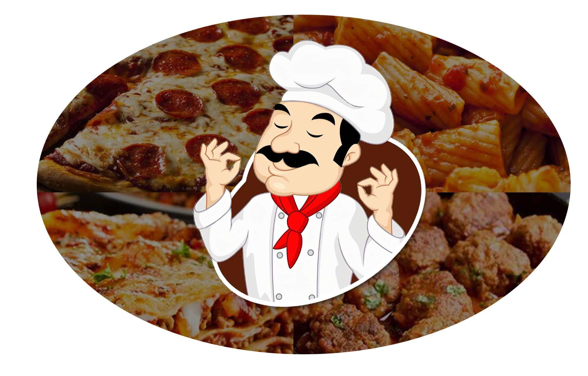

Cacio e Pepe

Tida como a massa simples e fácil da culinária italiana, a iguaria é muito simples de ser preparada. O prato tem origem a partir do queijo de mesmo nome e que é um dos ingredientes que compõe a receita: o pecorino ou cacio (queijo de ovelha) e na pimenta do reino preta (pepe).
Acredita-se que seu surgimento remonta a 3.000 anos antes de Cristo, tendo sido o principal alimento para os pastores e camponeses.
Os ingredientes para preparar um Cacio e Pepe são a massa de espaguete nº 5, pimenta do reino e o queijo cacio.